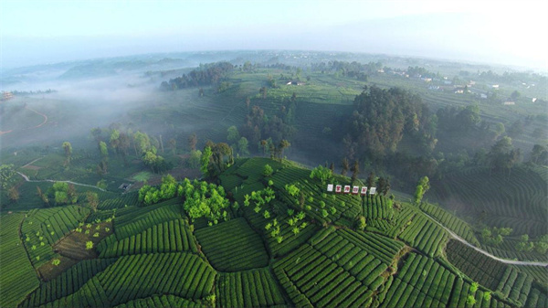

一件茶物 / 一段可带走的记忆
带走的，
不止一杯茶。
茶芽成为可拆的书签，古道成为随行的茶牌，建筑成为桌上的一方小景。文化不只被观看，也能被使用、被讲述、被分享。
The tea journey / 茶的五段旅程
在山里记住来处，在路上遇见彼此，在城里继续生长。
 七叶 QIYE · 原创角色设计
七叶 QIYE · 原创角色设计Meet Qiye / 你的茶路同行者
七叶的轮廓，来自舒展的茶芽与层叠的茶田。七片叶是故乡的记忆，竹篓装着一路的好奇，一滴琥珀茶汤留下分享的温度。
温和，也有自己的方向。
它连接古老的茶文化，与今天仍在发生的生活。

A real place, a living culture
四川 · 雅安名山 · 牛碾坪茶园
From mountain to city / 从茶山到茶城
从蒙顶山的文化记忆，到名山河畔的公共生活，再到旧街巷与旧空间的新想象。七叶把茶的远行，续写成一场人与城市的相遇。
山为底 · 水为脉 · 茶为魂
The Qiye collection / 茶物展馆
十七件设计提案，一条共同的茶路。
选择喜欢的茶物，装进自己的随行茶篓。
一件茶物 / 一段可带走的记忆
茶芽成为可拆的书签，古道成为随行的茶牌，建筑成为桌上的一方小景。文化不只被观看，也能被使用、被讲述、被分享。
每件茶物，都有自己的文化来处。
图为作者提供的设计效果图。材质、尺寸与工艺属于设计意向，以后续打样为准。
把我的心意，写进茶路卡 ↗文化叙述依据公开资料整理；七叶角色、文创与互动为原创设计转译。城市节点另参考用户提供的官方参赛命题资料，停留活动与旧址更新内容为设计提案；古道与城市图形不是导航地图。文创展示均为设计效果图，未据此宣称完成生产或性能验证。茶园资料图权利归原权利人，商业宣传前需取得授权或替换为自有摄影。
本原型无需登录，不收集付款或订单信息；昵称、留言、心境、茶篓和旅程进度仅保留在当前浏览器。生成图片前请自行确认愿意分享的内容。可随时清除本机记录。